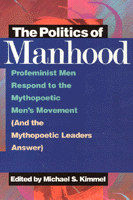

<body bgcolor="#FFFFFF" text="#000000" link="#0000FF" vlink="#CC0000" alink="#CC0000"><center><hr width="350" size="1" align="center" noshade>A much-needed, often startling debate on the personal and political dimensions of masculinity<hr width="350" size="1" align="center" noshade><p><a href="https://cdcshoppingcart.uchicago.edu/Cart/ChicagoBook.aspx?ISBN=9781566393652&&PRESS=temple" target="_top">Buy this book!</a> | <a href="https://cdcshoppingcart.uchicago.edu/Cart/Cart.aspx?PRESS=temple" target="_top">View Cart</a> | <a href="https://cdcshoppingcart.uchicago.edu/Cart/Cart.aspx?PRESS=temple" target="_top">Check Out</a></p><p></p></center><!--none//--><h1>The Politics of Manhood</h1>
<H2>Profeminist Men Respond to the Mythopoetic Men's Movement<br>(And the Mythopoetic Leaders Answer)</H2>
<h3>edited by Michael S. Kimmel</h3>
<P>cloth 1-56639-365-5 $86.50, Nov 95, <FONT COLOR=#990033>Out of Stock Unavailable</FONT>
<br>paper 1-56639-366-3 $27.95, Nov 95, <FONT COLOR=#990033>Out of Stock Unavailable</FONT>
<br>Electronic Book 1-43990-146-5 $29.95 <FONT COLOR=#990033>Out of Stock Unavailable</FONT>
<BR> 400 pp
6x9
</P><BLOCKQUOTE><I>"...a watershed in the national conversation on masculinity that has emerged over the past few years....[T]his book represents not only an extremely interesting text and an historically important document, but also an intervention that will likely change the nature of discourse about men's lives."</I>
<br>&#151<b>Ronald F. Levant</b>, co-author of <I>Masculinity Reconstructed</I><I></I></BLOCKQUOTE>
<p>These essays by profeminist men critique the surface ideals and underlying messages promoted by the men's movement. Is it a backlash against feminism or does it respond to men's real needs independent of feminism? What does the movement say about the appropriate models of masculinity?
<p>While the movement may be more than a bunch of white middle-aged men in war-paint, chanting and grunting in the forest, the profeminist men writing here express their explicit concern with both the surface ideals and the underlying messages promoted by the movement. Essays by several of the leaders of the mythopoetic men's movement, including Robert Bly, respond to the profeminist criticisms, opening a provocative dialogue among men about the politics of the contemporary men's movement, the "crisis" of masculinity, and where to go from here.
<BR>&nbsp;<h2>Reviews</h2>
<p><I>"Kimmel leads the field! First a documentary history of profeminist men, now a collection of their responses to the mythopoetic men's movement. Kimmel senses what American culture wants to know about gender and delivers it. Valuable reading for activist, scholar, and student&#151for every man and woman in America."</I>
<br>&#151<b>Jean O'Barr</b>, Director of Women's Studies, Duke University
<p><I>"Can men learn to use male privilege with integrity, on behalf of gender justice? Perhaps&#151if they are willing to challenge each other with respect, to educate each other with compassion, and to call each other into accountability with love. The often-startling debate documented in </I>The Politics of Manhood<I> offers a powerful model for such crucial discourse among men. In collecting these passionate voices, Michael Kimmel thwarts media attempts to caricature the mythopoets, disappear the pro-feminists, and dismiss progressive efforts to scrutinize masculinity altogether. This book provides a much-needed dimensionality to a movement-in-progress, and insight into the complexity of men's work&#151both personal and political&#151for gender justice."</I>
<br>&#151<b>Kay Leigh Hagan</b>, author of <I>Fugitive Information: Essays from a Feminist Hothead</I> and editor of <I>Women Respond to the Men's Movement: A Feminist Collection</I>
<BR>&nbsp;<h2>Contents</h2><P>
<p>Preface
<br>Publication Information
<br>Introduction &#150 Michael S. Kimmel
<p><b>Part I: Conceptual Critiques</b>
<br>1. Weekend Warriors: Robert Bly and the Politics of Masculine Retreat &#150 Michael S. Kimmel and Michael Kaufman
<br>2. Mythopoetic Foundations and New Age Patriarchy &#150 Ken Clatterbaugh
<br>3. Gazing into Men's Middles: Sam Keen's <I>Fire in the Belly</I> &#150 Don Sabo
<p><b>Part II: The Personal is Political: The Mythopoetic Men's Movement as a Social Movement</b>
<br>4. Men at Bay: The Men's Movement and Its Newest Bestsellers &#150 R.W. Connell
<br>5. The Politics of the Mythopoetic Men's Movement &#150 Harry Brod
<br>6. "Changing Men" and Feminist Politics in the United States &#150 Michael A. Messner
<p><b>Part III: The Personal is Intellectual</b>
<br>7. Born to Run: Nineteenth Century Fantasies of Masculine Retreat and Recreation (<I>or</I> The Historical Rust on <I>Iron John</I>) &#150 Michael S. Kimmel
<br>8. Deep Masculinity as Social Control: Foucault, Bly and Masculinity &#150 Tim Beneke
<br>9. A Woman for Every Wild Man: Robert Bly and His Reaffirmation of Masculinity &#150 David Gutterman
<br>10. Renewal as Retreat: The Battle for Men's Souls &#150 Timothy Nonn
<br>11. Mythopoetic Men's Work as a Search for Communitas &#150 Michael Schwalbe
<p><b>Part IV: The Personal is Personal: The Politics of the Masculinist Therapeutic</b>
<br>12. Homophobia in Robert Bly's <I>Iron John</I> &#150 Gordon Murray
<br>13. The Shadow of <I>Iron John</I> &#150 Paul Wolf-Light
<br>14. Soft Males and Mama's Boys: A Critique of Bly &#150 Terry A Kupers
<br>15. Psyche, Society, and the Men's Movement &#150 Chris Bullock
<br>16. Cultural Daddy-ism and Male Hysteria, &#150 David M. Weed
<br>17. Iron Clint: Queer Weddings in Robert Bly's <I>Iron John</I> and Clint Eastwood's <I>Unforgiven</I> &#150 Mark Simpson
<p><b>Part V: The Struggle for Men's Souls: Mythopoetic Men Respond to the Pro Feminist Critique</b>
<br>18. Thoughts on Reading This Book &#150 Robert Bly
<br>19. The Post-Feminist Men's Movement &#150 Aaron Kipnis
<br>20. Healing, Community and Justice in the Men's Movement: Towards a Socially Responsible Model of Masculinity &#150 Onaje Benjamin
<br>21. Mythopoetic Men's Movements &#150 Shepherd Bliss
<br>22. We've Come a Long Way Too, Baby. And We've Still Got a Ways to Go. So Give Us a Break! &#150 Marvin Allen
<br>23. 25 Years in the Men's Movement &#150 Jed Diamond
<p><b>Part VI: Conclusion: Can We All Get Along?</b>
<br>24. Why Mythopoetic Men Don't Flock to NOMAS &#150 Michael Schwalbe
<br>25. In Defense of the Men's Movements &#150 Don Shewey
<br>26. Betwixt and Between in the Men's Movement &#150 Mike Dash
<p>Afterword: Tame Questions of Wild Men &#150 Michael S. Kimmel
<br>Contributors
</P><BR>&nbsp;<H2>About the Author(s)</H2>
<table><tr><td valign="top"><img src="/tempress/authors/1190_au.gif" height="90" width="75"></td><td width="100%" valign="middle"><p>Spokesperson for the National Organization for Men Against Sexism, <B>Michael S. Kimmel</B> is Professor of Sociology at the State University of New York, Stony Brook, and editor of <I>masculinities</I>, a scholarly journal. His books include <I>Men's Lives</I>, <I>Men Confront Pornography</I>, and <I>Manhood in America: A History</I>.</P></td></tr></table>
<P>Contributors: Marvin Allen, Tim Beneke, Onaje Benjamin, Shepherd Bliss, Robert Bly, Harry Brod, Chris Bullock, Ken Clatterbaugh, R.W. Connell, Mike Dash, Jed Diamond, David Gutterman, Michael Kaufman, Michael S. Kimmell, Aaron Kipnis, Terry A. Kupers, Michael A. Messner, Gordon Murray, Timothy Nonn, Don Sabo, Michael Schwalbe, Mark Simpson, Don Shewey, David M. Weed, and Paul Wolf-Light.</P>
<BR><H2>Subject Categories</H2>
<p><A HREF="/tempress/general.html" TARGET="_top">General Interest</a>
<BR><A HREF="/tempress/gender.html" TARGET="_top">Gender Studies</a>
</p>
<p align="center"><a href="https://cdcshoppingcart.uchicago.edu/Cart/ChicagoBook.aspx?ISBN=9781566393652&&PRESS=temple" target="_top">Buy this book!</a> | <a href="https://cdcshoppingcart.uchicago.edu/Cart/Cart.aspx?PRESS=temple" target="_top">View Cart</a> | <a href="https://cdcshoppingcart.uchicago.edu/Cart/Cart.aspx?PRESS=temple" target="_top">Check Out</a></p><p><font face="Arial" size="1"><a href="copyright.html" onMouseOver="window.status='Web Copyright Policy';return true;" onMouseOut="window.status=''" title="Web Copyright Policy">&copy;</a> 2015 <a href="http://www.temple.edu" target="new" onMouseOver="window.status='Link to Temple University home page';return true;" onMouseOut="window.status=''" title="Link to Temple University home page">Temple University</a>. All Rights Reserved. http://www.temple.edu/tempress/titles/1190_reg.html</font></p>